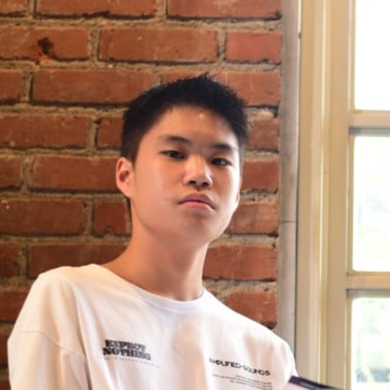

Clayton Lie
Student | Python | AI Enthusiast
I like to talk about AI and life
About
I am a Computer Science student interested in AI and social science. Writing, deep conversations, and coding have been part of my life.
I am currently focused on strengthening my Python foundation, building programming projects, and studying machine learning through hands-on work.
I am especially interested in opportunities where I can connect AI with real-world industries. I look forward to contributing, learning from experienced teams, and growing through real technical work.
I love connecting with new people. Feel free to reach me at claytonlieofficial@gmail.com.
Education
The Chinese University of Hong Kong, Shenzhen
Bachelor of Engineering, Computer Science
2024 – 2028 (Expected)
Certificates / Awards
2026 CUHK-SZ Undergraduate Research Conference
- Conducted independent qualitative research on academic decision-making among Indonesian students at CUHK-Shenzhen, investigating social influence as a driver of major changes.
- Designed the research framework, collected and analyzed qualitative data, and produced a full written report while managing the end-to-end research process independently.
2024 Guangdong Government Outstanding International Student Scholarship
Projects
The Housing Price Predictor
In ProgressAnalyzed housing data using Python and CSV to practice data cleaning and basic analysis.